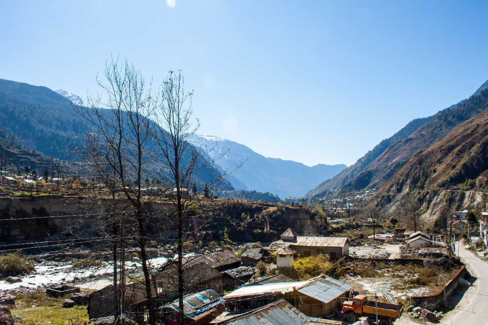
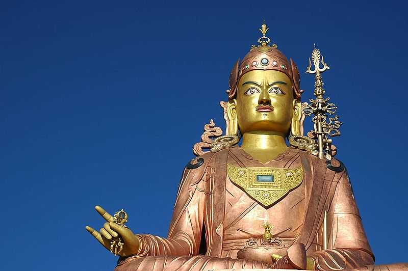
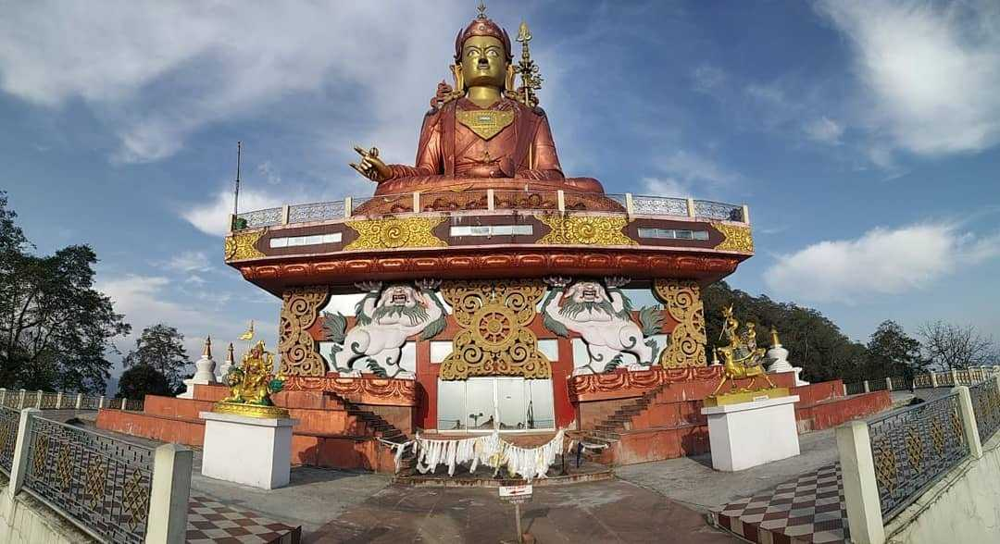

The popular Yumthang Valley in North Sikkim is located 140 km north of Gangtok. Famous as the "Valley of flowers", this is a rare and exotic location with hot springs, rivers, yaks and lush green meadows.
Pelling is a small town located in the West district of Sikkim, at an altitude of 2,150 meters (7,200 feet) above sea level. It is one of the most popular tourist destinations in Sikkim, known for its breathtaking views of the Himalayas and the famous Kanchenjunga peak, the third-highest mountain in the world.
Incredibly alluring, pleasantly boisterous and wreathed in clouds - Gangtok, the capital of Sikkim, is one of the most popular hill stations in India. Lying at the height of 1650 m above sea level, the town during its bright sunny days offers spectacular views of Mt.
Nathula, one of the highest motorable roads in the world, is a mountain pass in the Himalayan peaks that co-joins Sikkim and China. Situated on the Indo-Tibetan border 14450 ft. above sea level, Nathu La is one of the most important Himalayan passes in the country.

Perched at an altitude of around 8,858 ft, Lachung is a small hill town in North Sikkim. It is situated in a deep valley on the rugged bank of the Lachung River (a tributary of the Tista River) at the foothills of the Himalayas.

Surrounded by beautiful forests and majestic hills, South Sikkim is the perfect vacation spot for someone looking for a retreat in the midst of nature in its most natural form.
Chopta is a very famous tourist hotspot in North Sikkim known for its varying hues. Famous as the "Valley of flowers", the Chopta Valley is popular for its riot of colours during summer months.
Nestled at the foothills of the awe-inspiring Mount Kanchenjunga, West Sikkim beckons travelers with a blend of breathtaking landscapes and profound spiritual heritage. This region, sharing its borders with Nepal, is a haven for those seeking a rendezvous with nature and spirituality alike.

14th highest lake in the world and the highest lake in India, the Cholamu Lake in North Sikkim is situated at an altitude of 18000 feet from the sea level. While coming down the slope around 300 feet from Donkiala pass ( 18300 feet ), you can get the first sight of this moderately sized, almost frozen lake.
The third highest peak in the world, the majestic Kanchenjunga, also spelt Kangchenjunga, is one of the most stunning mountains. Surrounded by Nepal, Sikkim and Tibet, Mt Kanchenjunga was first scaled in 1955 but since then has been declared sacred.

Situated just 5 kilometers away from Namchi, Samdruptse Hill is a revered site adorned with a towering statue of Guru Padmasambhava, overlooking the city from an altitude of 2134 meters.
Kaluk is a picturesque village nestled in the West Sikkim district of the Indian state of Sikkim. Situated at an altitude of around 5,500 feet (1,676 meters) above sea level, Kaluk offers breathtaking views of the majestic Himalayan mountains, lush green valleys, and dense forests.